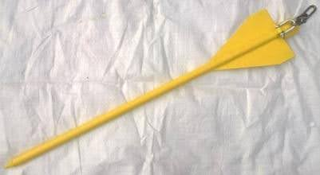
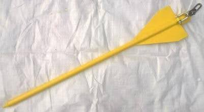

Комплект раскрепляющий "Спрут"

Комплект раскрепляющий "Спрут" является страховочным приспособлением и предназначен для дополнительного укрепления опор воздушных линий электропередачи (ВЛ), линий связи с целью предотвращения их падения при выполнении работ с подъемом на опору (согласно п. 4.15.5 "Межотраслевые правила по охране труда при эксплуатации электроустановок"). С помощью "Спрут" возможно укрепить опоры ВЛ (деревянные, железобетонные, металлические, стальные) любого по форме сечения за счет её фиксации с помощью цепного захвата (фиксирующего устройства) и трех растяжек, развёрнутых под углом 120° друг к другу, которые соединяются с якорными устройствами, заглубляемыми в грунт. Подъём и фиксация цепного захвата (фиксирующего устройства) осуществляется с земли сборной штангой.
В настоящее время выпускаются основные варианты поставки «Спрут»:
- с якорными устройствами лемешного типа (забиваются в грунт). Их рекомендуется применять на плотных и средней плотности грунтах, где обеспечивается натяжение растяжек с усилием - 500 кг/с. Данные устройства забиваются в грунт. Для безопасного забивания рекомендуется применять боек с направляющей. В этом случае забивание производится путем перемещения бойка по направляющей с нанесением удара по якорному устройству. Учитывая, что преобладают плотные и средней плотности грунты, комплект раскрепляющий «Спрут» в базовом исполнении выпускается с якорными устройствами лемешного типа.
- с якорными устройствами шнекового типа (закручиваются в грунт). В условиях слабонесущих грунтов (песок, торф, заболоченная местность) якорные устройства лемешного типа не удерживают необходимое усилие. Рекомендуется применять якорные устройства шнекового типа, по одному на растяжку. Данные устройства закручиваются в грунт. Закручивание производится при помощи воротка, который вставляется в штатную рукоять. На заболоченной местности рекомендуется применять по два якорных устройства шнекового типа на одну растяжку, объединенных между собой отрезком цепи длиной до 1 м. Два отрезка можно соединить замком, который будет поставляться при покупке двух якорных устройств на одну растяжку.
Порядок применения, характеристики и варианты поставки комплекта раскрепляющего "Спрут" смотрите в Каталоге продукции. В форме Запрос возможно уточнить цену, сроки изготовления, запросить коммерческое предложение, документы или задать вопрос.
ЗапросСуществует четыре основных варианта поставки комплекта раскрепляющего «Спрут» с диаметром охватываемой опоры от 160 до 350 мм.
- Комплект раскрепляющий "Спрут" (в футляре) - (с якорными устройствами лемешного типа) Данный вариант считается базовым для поставки.Дополнительно можно укомплектовать бойком с направляющей. Боек с направляющей применяются для безопасного забивания в грунт и извлечения якорных устройств лемешного типа.
- Комплект раскрепляющий "Спрут" (в чехле брезентовом) - (с якорными устройствами лемешного типа). Чехол брезентовый является менее прочной и долговечной упаковкой.
- Комплект раскрепляющий "Спрут" - (с якорными устройствами шнекового типа). Применяется для слабонесущих грунтов (болотистых, песчаных, рыхлых).
- Комплект раскрепляющий "Спрут" (в футлярах с якорными устройствами шнекового и лемешного типов) – универсальный. Включает 3 вариант поставки и дополнительно якорные устройства лемешного типа (в футляре). Дополнительно можно укомплектовать бойком с направляющей. Все базовые комплекты возможно доукомплектовывать.
Возможны дополнительные варианты поставки (согласовывать обязательно до поставки):
- С цепным захватом для опор диаметром до 400 или 500 мм. (увеличивается длина цепи) Для стальных опор (круглого сечения) малого диаметра (146-240 мм) выпускается специальный цепной захват.
- С растяжками из каната полиамидного (в базовом варианте из стального троса). При необходимости возможно изготовить растяжки длиной до 15 м.
- По согласованным характеристикам и комплектации. Например, аналог УР-3
Конструкция комплекта раскрепляющего «Спрут» позволяет закрепить цепной захват на любой высоте опоры с помощью сборной штанги. Благодаря этому его установку может производить даже один человек.
 

Достоинства
- безопасная и эффективная технология укрепления опоры
- легкий и удобный функционал
- установку может производить даже один человек
- различные варианты поставки
Сертификация и гарантия
Изделие сертифицировано
Разработан и изготавливается Научно-производственным центром
"Электробезопасность", г. Киров.
Поставка и организация технического обслуживания осуществляется ООО "Электробезопасность-Вятка".
Гарантийный срок эксплуатации – 2 года со дня отгрузки с предприятия-изготовителя.